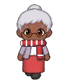

Wiki › Quests › 👻 The team that never left the bench
👻 The team that never left the bench
Level 705 Forgotten Cup 🌀 Multiverse Stadium

The story
Bench United waited on the bench for the whole Cup. Beat 40 Eternal Subs in the Abandoned Locker Room and show them their turn has come!
The Bench United coach always said: "easy now, your turn will come". The final stopped before he could call anyone in. Watch out: the Eternal Sub calls other subs to help, and the Sleepwalking Physio takes care of his teammates.
What to do
🎯 Beat 40x Eternal Sub (Abandoned Locker Room)
- Beat 40x
 Eternal Sub
Eternal Sub
📍 Where to find it and how to get there
👾Who: Eternal Sub — Level 705
🗺️Where: 👕 Abandoned Locker Room (🌀 Multiverse Stadium)
🧭Trip: 🌀 In Rio de Janeiro, talk to the Multiverse Guardian. 🏟️ In the Multiverse, go through the Forgotten Stadium Portal (level 700).
🧭Path: from there: 🌀 Multiverse Stadium → 🏟️ Forgotten Stadium → 👕 Abandoned Locker Room
📌Inside: em cima, on the left of the map (northwest)
Rewards
- ⭐ 191,779,567 XP
- 🪙 2,115,000 coins
- 4x
 Forgotten Ticket
Forgotten Ticket
When you finish (there may be a surprise!)
Look: they’re smiling! They got to go on the field, even if just for a minute. Keep the Bench United sticker in your album.
⬅️ First, finish: 🎟️ The oldest fan
➡️ Then unlocks: 👻 The ball that ran away